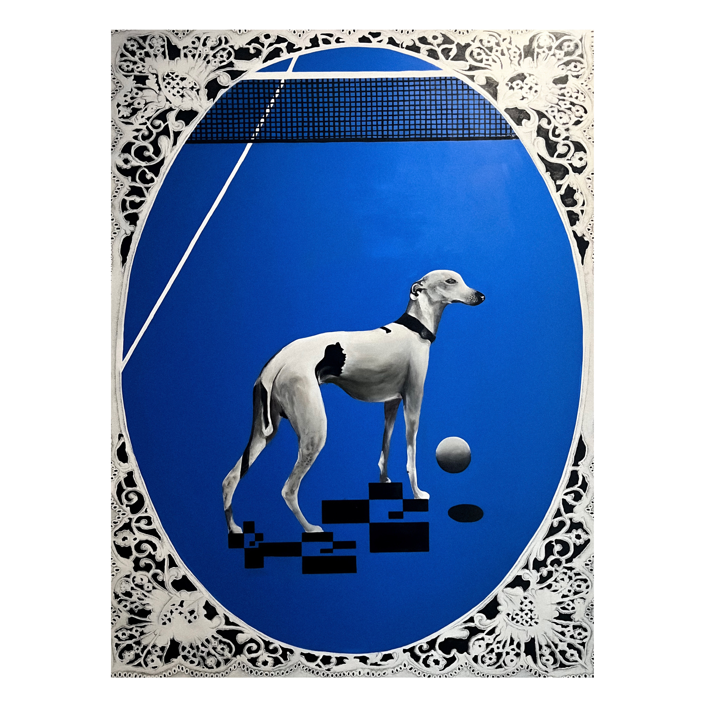
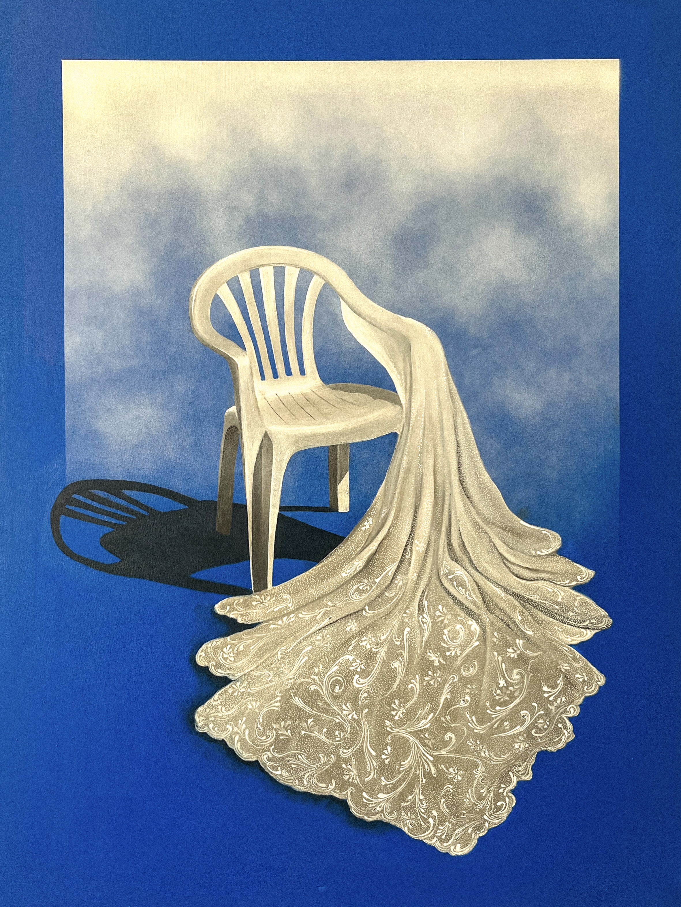
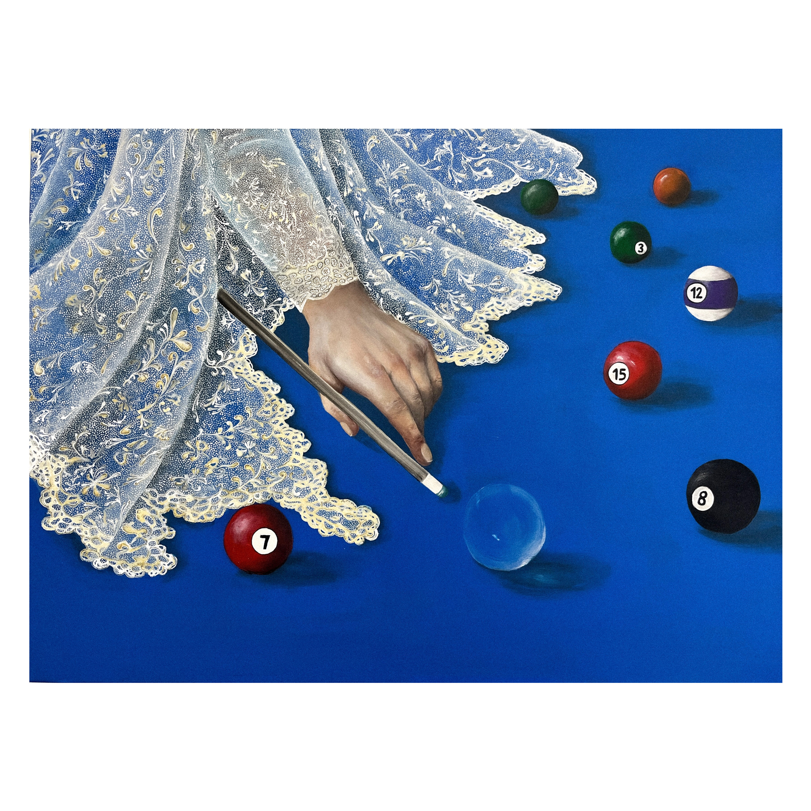
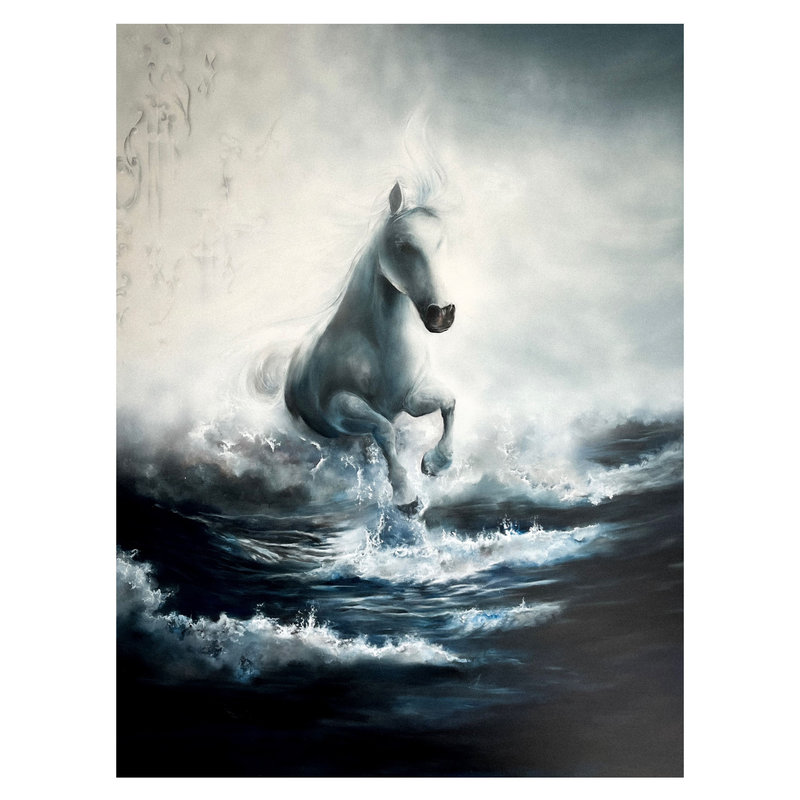

La velocidad es abordada como una potencia contenida a travez de una escena surreal en la que un galgo inmovil, una cancha vacia y una pelota suspendida generan una sensacion de tiempo detenido. La obra tensiona movimiento y pausa, desafiando la percepcion del ritmo y del tiempo en lo cotidiano

En esta obra La silla plastica, objeto funcional y producido en asa, encarna la logica de lo artificial como sustituto de lo noble. El encaje introduce la noción de ornamento y revela la paradoja de una busqueda de autenticidad a travez de lo falso.

Esta obra reflexiona sobre la irrupcion de lo inesperado en un sistema que aparenta estabilidad. El billar, asociado al control y la precision, es alterado por elementos que introducen una dimensión poética y desestabilizan su lógica habitual.

Esta obra aborda la energia desbordada y la tranformación mediante la imagen de un caballo blanco emergiendo de un mar embravecido, donde cuerpo y agua se funden en una misma materia dinamica.